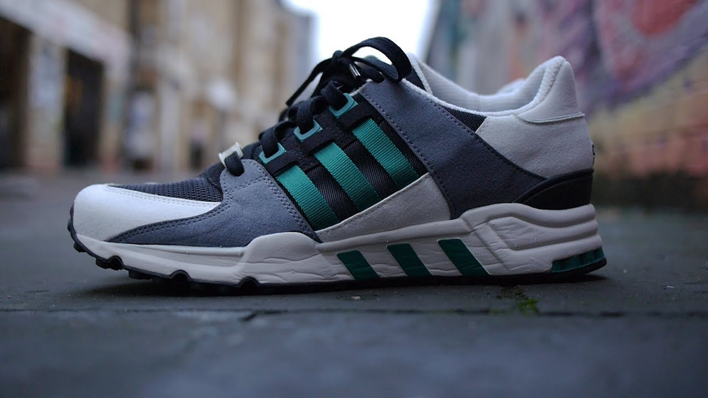

Adidas eqt Support 93
Price: $249About
The adidas EQT Support 93 Sean Wotherspoon is a sneaker collaboration between adidas and Sean Wotherspoon, an American streetwear designer and co-founder of the Round Two vintage streetwear store.
Share:
Just Do It
Did you know the 1990s transformed sneakers into a cultural icon? This decade saw sneakers rise beyond sports, becoming a powerful symbol in fashion and music.